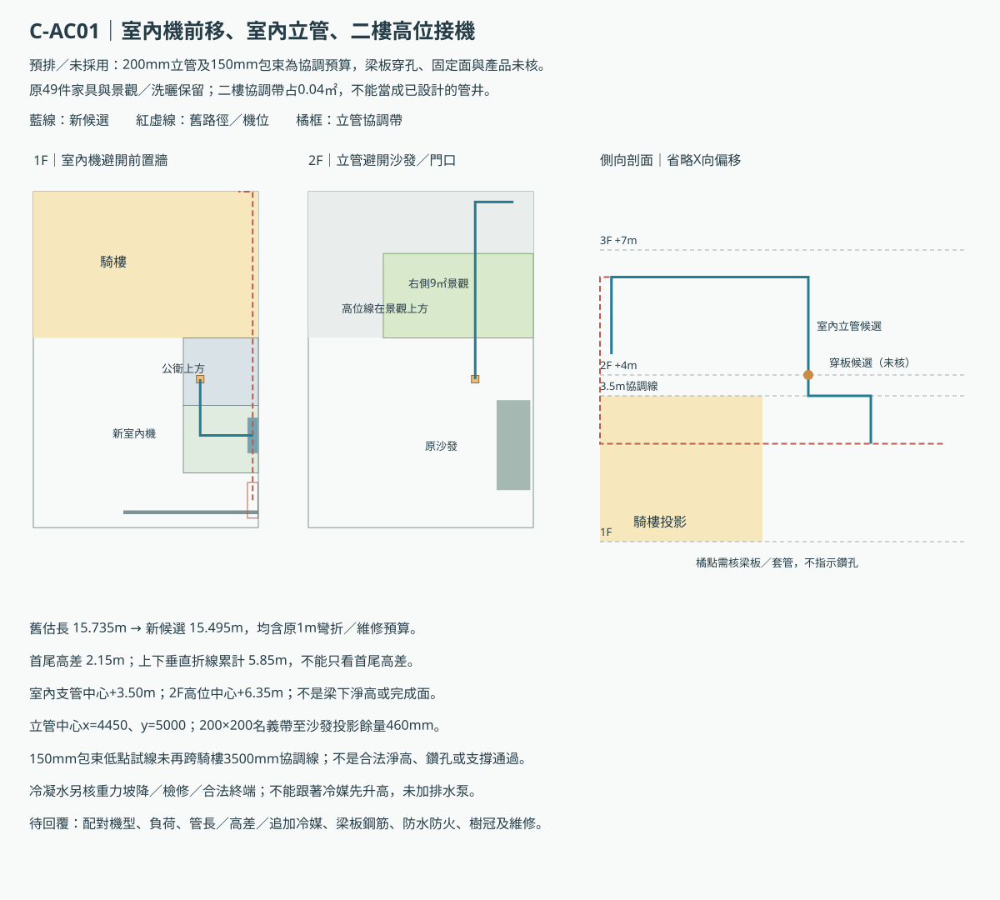

ABC高雄厝陽台分區比較
完整方案未採用／專業未核。C棟已併入4m24級與前置可關門；孝親套衛及三樓通道保留，產品與結構仍待核。局部座標無衝突不等於高雄厝或建照合格。
藍框：擬申報景觀範圍；綠色：降板覆土候選投影，非已完成土深／支承設計。原陽台剩餘面積仍須另核合法性。
C樓梯與門組整合說明；3D側欄可切換前門／二樓側門開關，平面圖預設開門。
開啟3D · 取捨與手動驗收 · 原整棟方案
A｜後側8㎡條件比較；前側加深另列代價
- 獨立高雄厝比較，未採用／專業未核；基地、法定面積、覆土、支承、外窗與能效仍未知。
- 只改二樓陽台分區及指定設備位置，原房間、床櫃、門窗、樓梯與標高保留。
- 8m²只是後巷／永久性空地等臨接條件成立時的景觀比較；平均深度名義正好2m無餘量，完成面與量測基準未核。前後兩側室外機維修帶保留。
- B祭祀與前後門三種使用狀態保留；A1照護外窗、電梯及完整機電尚未解。
討論配置：開此狀態3D
景觀區名義8㎡，覆土比較2.85㎡（35.6%），木本示意3株、至少一株120cm；土深及結構未知。其餘4㎡不給景觀免計信用。
本次二樓陽台細部 · 另開放大圖各層完整平面對照
1F 公共×MDF · 另開SVG2F 私領域 · 另開SVG3F 娛樂 · 另開SVGRF 設備層 · 另開SVGB｜後巷優先＋9.12㎡景觀分區
- 獨立高雄厝比較，未採用／專業未核；基地、法定面積、覆土、支承、外窗與能效仍未知。
- 只改二樓陽台分區及指定設備位置，原房間、床櫃、門窗、樓梯與標高保留。
- 9.12m²景觀區接前右起居室；左右兩台室外機及其原維修帶均保留。其餘14.28m²為普通陽台／設備待核區，不視為已合法或全數免計。
- B祭祀與前後門三種使用狀態保留；A1照護外窗、電梯及完整機電尚未解。
日常停凳：開此狀態3D
景觀區名義9.12㎡，覆土比較3.24㎡（35.5%），木本示意4株、至少一株120cm；土深及結構未知。其餘14.28㎡不給景觀免計信用。
本次二樓陽台細部 · 另開放大圖各層完整平面對照
1F 祭祀／搬轎／淋浴預案 · 另開SVG2F 起居／主臥預案 · 另開SVG3F 閱讀／後客房骨架 · 另開SVGRF 設備待排／屋突未核 · 另開SVG祭祀座位／公衛側緣通行：開此狀態3D
景觀區名義9.12㎡，覆土比較3.24㎡（35.5%），木本示意4株、至少一株120cm；土深及結構未知。其餘14.28㎡不給景觀免計信用。
本次二樓陽台細部 · 另開放大圖各層完整平面對照
1F 祭祀／搬轎／淋浴預案 · 另開SVG2F 起居／主臥預案 · 另開SVG3F 閱讀／後客房骨架 · 另開SVGRF 設備待排／屋突未核 · 另開SVG搬轎整備（非同時祭祀）：開此狀態3D
景觀區名義9.12㎡，覆土比較3.24㎡（35.5%），木本示意4株、至少一株120cm；土深及結構未知。其餘14.28㎡不給景觀免計信用。
本次二樓陽台細部 · 另開放大圖各層完整平面對照
1F 祭祀／搬轎／淋浴預案 · 另開SVG2F 起居／主臥預案 · 另開SVG3F 閱讀／後客房骨架 · 另開SVGRF 設備待排／屋突未核 · 另開SVGB｜前門備案＋9.12㎡景觀分區
- 獨立高雄厝比較，未採用／專業未核；基地、法定面積、覆土、支承、外窗與能效仍未知。
- 只改二樓陽台分區及指定設備位置，原房間、床櫃、門窗、樓梯與標高保留。
- 9.12m²景觀區接前右起居室；左右兩台室外機及其原維修帶均保留。其餘14.28m²為普通陽台／設備待核區，不視為已合法或全數免計。
- B祭祀與前後門三種使用狀態保留；A1照護外窗、電梯及完整機電尚未解。
日常停凳：開此狀態3D
景觀區名義9.12㎡，覆土比較3.24㎡（35.5%），木本示意4株、至少一株120cm；土深及結構未知。其餘14.28㎡不給景觀免計信用。
本次二樓陽台細部 · 另開放大圖各層完整平面對照
1F 祭祀／搬轎／淋浴預案 · 另開SVG2F 起居／主臥預案 · 另開SVG3F 閱讀／後客房骨架 · 另開SVGRF 設備待排／屋突未核 · 另開SVG祭祀座位／公衛側緣通行：開此狀態3D
景觀區名義9.12㎡，覆土比較3.24㎡（35.5%），木本示意4株、至少一株120cm；土深及結構未知。其餘14.28㎡不給景觀免計信用。
本次二樓陽台細部 · 另開放大圖各層完整平面對照
1F 祭祀／搬轎／淋浴預案 · 另開SVG2F 起居／主臥預案 · 另開SVG3F 閱讀／後客房骨架 · 另開SVGRF 設備待排／屋突未核 · 另開SVG搬轎整備（非同時祭祀）：開此狀態3D
景觀區名義9.12㎡，覆土比較3.24㎡（35.5%），木本示意4株、至少一株120cm；土深及結構未知。其餘14.28㎡不給景觀免計信用。
本次二樓陽台細部 · 另開放大圖各層完整平面對照
1F 祭祀／搬轎／淋浴預案 · 另開SVG2F 起居／主臥預案 · 另開SVG3F 閱讀／後客房骨架 · 另開SVGRF 設備待排／屋突未核 · 另開SVGC｜原洗曬／空調控制案
- 獨立高雄厝比較，未採用／專業未核；基地、法定面積、覆土、支承、外窗與能效仍未知。
- 只改二樓陽台分區及指定設備位置，原房間、床櫃、門窗、樓梯與標高保留。
- 原C控制案；沒有新增景觀區，原格局不視為符合高雄厝。
- C照護側盆／門組續版仍另案；本圖不默認合併，公衛／客餐及一樓工作陽台原需求保留。
討論配置：開此狀態3D
控制案，沒有新景觀區。
本次二樓陽台細部 · 另開放大圖各層完整平面對照
1F IDF×孝親 · 另開SVG2F 公共×客房 · 另開SVG3F 主臥×運動 · 另開SVGRF 設備層 · 另開SVGC｜4m24級＋前置可關門＋右景觀／左洗曬
- 屋主已確認前置可關門配置；完整方案未採用／專業未核，門組與實際淨寬未選定。
- 1F4m、24級、270mm踏面；完整1000mm平台與前室共享200mm，2F到達面分開，孝親套衛及3F通道不縮。
- 前門線y=8550；前門及2F側門可切換示意開關，沒有以普通滑門宣稱防火或隔音認證。
- 右側9㎡景觀、左側單機洗曬保留；C-AC01室內機移至乾式前室右壁，採室內立管／二樓高位候選線，穿板、固定與排水仍待核。
討論配置：開此狀態3D
景觀區名義9㎡，覆土比較3.393㎡（37.7%），木本示意4株、至少一株120cm；土深及結構未知。其餘14.4㎡不給景觀免計信用。
本次二樓陽台細部 · 另開放大圖各層完整平面對照
1F IDF×孝親 · 另開SVG2F 公共×客房 · 另開SVG3F 主臥×運動 · 另開SVGRF 設備層 · 另開SVGA外窗／前陽台與C騎樓樓梯：先看代價
| 方向 | 這輪判斷 |
|---|
| A前陽台全寬1.5→2.2m | 主臥減4.2㎡，名義僅15.48㎡、深2.58m；低於原16㎡目標且不足景觀所在居室3m深，不推薦直接改。 |
| A1外窗 | 側界合法外空間尚未知；1×1m前天井會吃掉1㎡客餐，並穿過上層公共走道，須整棟重排，沒有畫成已解。 |
| C已整合：4m／24級／270mm踏面 | 每級約166.67mm，完整1000mm前平台向公共前室共享200mm，保留梯廳外框、孝親套衛及三樓通道；二樓到達面分開，前置門設於平台之前。2F／3F／RF標高為+4／+7／+10m。原3.6m／22級保留於C控制案；降板、實際淨高、梁板及門組未核。 |
尚缺基地／後巷與開口權利、法定面積表、懸臂／覆土防水剖面、第一＋級能效與浴廁完整設計。沒有新增電梯或默認任何免計面積。
C客餐冷氣：室內立管候選
室內機移至乾式前室右壁，避開前置分隔牆；公衛上方升至二樓起居空白角，再走二樓高位接室外機。200×200mm協調帶占二樓0.04㎡，沒有縮家具、孝親房或景觀區。
舊估長15.735m → 候選15.495m；沒有再排2350mm低位跨騎樓線，但梁板穿孔、固定、機型限制、樹冠與冷凝排水仍待核，未採用／非施工圖。
尺寸、代價與未解條件 · 新舊管線／兩層剖面圖
